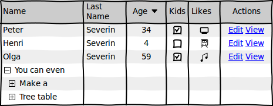

To insert a table use the Table widget from the palette widget. Tables are configured via a more complex syntax in CSV format: one line for each row with commas or tabs being used as separators for columns. Tables allow you to insert icons, line returns, specify column alignments and sizes.
Here’s an example:
Name,Last\nName,Age v,Kids,Likes,Actions
Peter,Severin,34,[x],{computer},[Edit] [View]
Henri,Severin,4,[],{train},[Edit] [View]
Olga,Severin,59,[x],{note},[Edit] [View]
[-] You can even
[+] Have
[+] Treetable
Which renders to this:

Various cell attributes can be given using special instructions at the beginning of a table cell. The general syntax is:
instructions. Cell Content
Cell attributes can be used to specify column aligns and widths. Here are a few examples that show what’s available:
<. Align to left, (align:left). Also align to left >. Align to right, (align:right). Also align to right =. Center, (align:center). Also center (w:30). Width of 30 pixels, (w=30). The same, (width:30). Also works =(w=30). Width and align, (w:30)(align=center). The same, (width:30)(align:center). Also works
Note that specifying column widths only works when given in the header row. Column widths are expressed in pixels, but limited to the minimum width of the column’s content. If you wish to make a column as narrow as possible then give it the width of 1 pixel using: (w:1).
Cell attributes can also be used to control cell background. Here’s an example:
(bg:red). Red cell, (bgcolor:#0000FF)(align:left). Blue cell
Row attributes can be used to control row background. Here’s an example:
(bg:red)|Row with red background |Row with default selection background (bgcolor:#00F)|Row with blue background Regular row
This syntax also works for List and Tree widgets.
You can insert any icon using the {icon-name} syntax. There are also some text shortcuts and their equivalent icon syntax:
Insert \n sequence inside the text to break it in multiple lines. Use Shift+Enter shortcut to do it without typing.
To mark a row as selected you can prepend it with ‘|’ character, like this:
|This is a selected row
When editing complex tables you can use a spreadsheet application like Excel, Numbers, LibreOffice Calc or Google Spreadsheet (use the last link to quickly open a new spreadsheet page). Just copy the contents of the Table widget and then paste it to spreadsheet. After you are done editing the data, select the range of cells to transfer and then copy & paste their contents back into the Table widget.
Note that to make copy & paste from other apps as seamless as possible, Table widget accepts both comma and tab characters as cell separators.
Next: Working with Images